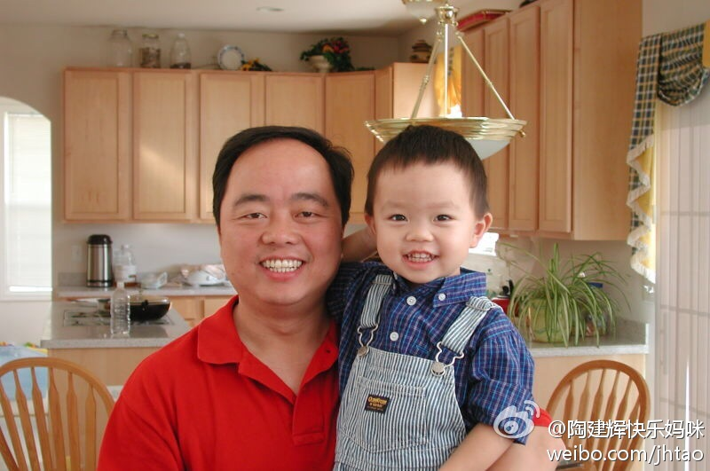

多谢 @网路游侠 @赵冬_zd987 @OliverWanng 推荐的365日历，已安装，很不错，可以和谷歌日历同步。刚使用时需要手工取消一些系统推荐的广告日历，不然界面很花。@Ada李力:除了谷歌日历，手机上还有什么好的日历工具呢，可以在手机端和PC端管理日程？
#读书#曾经有人说，在《读者文摘》上刊登的最理想的故事，应该叫这样的标题：《我在FBI工作时如何与狗熊发生关系并找到了上帝》，这个故事确实不错，包括了许多具有高度戏剧性的元素。- 标题党存在是有理由的。
没有建立信用体系的缘故//@宝葫芦得秘密:这是中美文化很有意思很不一样的一个地方，在中国，你首先被假定为坏人，做任何事情你需要去竭力拿出各种证明你不是坏人，但是，作为坏人成本很低。在美国，大家会假定你是个好人，但是一旦你被发现撒谎干了坏事，成本非常高。@Ada李力:信任感在当下环境中确实很难建立呢。超市买酸奶，促销员主动递，说跟我拿的几瓶总价一样，还多一个。虽然心里掠过疑虑，去餐馆都知道不要点服务员推荐的菜。但看是同一品牌，促销员又显得真诚，保质期看着合理，就把原来选的放回货架。今天连打开两瓶，都是酸得没法入口。唉，当做为轻信买教训吧。
励志，放对比照能更见效果。减重超30斤的IT人士，貌似还有@杨立东HM @徐继哲 @老赵 其中某人说，鉴于丰富的实战经验，他已经可以给别人做减肥指导教练了。@陶建辉-涛思数据:几乎每天都碰到说要减肥的朋友，给大家鼓励一把。照片应是2002年在家里拍的。我现在比那个时候轻了至少20斤。没吃过任何减肥的偏方，完全靠锻炼和控制饮食把体重在几个月时间内降了下来 
//@WeMarketing:你说她不懂的事，要她听你的，她就会觉得你可能是在骗她，所以会采用一种盘问的态度和你谈项目。没有了信任基础，办事就非常难办了。男老板这边则是这样，先找人探探你的底，然后请你吃个饭，拍拍你肩膀说：技术我不懂，就交给你们了啊，我只看出来的东西，做得好了我这边还有活儿。---:抱歉，作者已设置仅展示半年内微博，此微博已不可见。